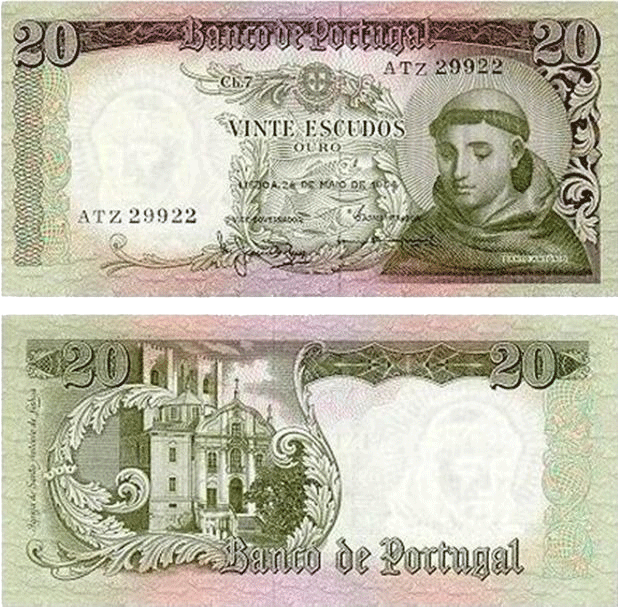

| Moedas e Notas |
Avaliçãoes |
Nota |
|
O Cruzeiro (Cr$) foi a moeda do Brasil de 1942 a 1967, de 1970 a 1986 e de 1990 a 1993.
Sua adoção se deu pela primeira vez em 1942, durante o Estado Novo, na primeira mudança de padrão
monetário no país, com o propósito de uniformizar o dinheiro em circulação.
Um cruzeiro equivalia a mil réis. O Cruzeiro passou por uma reforma monetária no governo Castelo Branco, sendo temporariamente
substituído pelo cruzeiro novo. A moeda voltou a ser substituída pela equipe do presidente José Sarney,
com o Plano Cruzado; o Cruzeiro voltou a vigorar no governo Collor
e foi definitivamente substituído pelo cruzeiro real em 1993. |
10 |
|
Os britânicos uma libra ( £ 1 ) moeda é uma denominação da libra esterlina . Seu anverso traz a
gravura latina ELIZABETH II DG REG (" Dei Gratia Regina ") FD ( Fidei defensor ) que significa,
"Elizabeth II, pela graça de Deus, Rainha, Defensora da Fé ".
Ele apresenta o perfil da Rainha Elizabeth II desde a introdução da moeda original em 21 de abril de 1983.
Quatro retratos diferentes da Rainha foram usados, com o mais recente desenho de
Jody Clarksendo apresentado em 2015. O desenho no verso da moeda atual de 12 lados apresenta quatro emblemas para representar cada uma das
nações do Reino Unido - a rosa inglesa , o alho - poró para Gales, o cardo escocês e o trevo para
Irlanda do Norte, também duas ou três folhas de carvalho - emergindo de uma única haste de 5 ramificações dentro de uma coroa.
|
10 |
|
Mil réis era praticamente o nome da moeda, já que ela valia mil
dos antigos reais do império. O montante equivalente a mil réis era chamado de conto de réis
, ou seja, um milhão de reais do Império. |
10 |
 |
A nota de um real (R$ 1,00) começou a ser produzida pela Casa da Moeda do Brasil em 1994 e
entrou em circulação a partir do dia 1 de julho daquele ano,
quando o Plano Real veio a substituir a moeda então em vigor. |
9 |
|  |
A nota de 20 escudos mais antiga é a que possui a figura de Santo António.
Foi estampada em Inglaterra, pela casa Brdbury, Wilkinson & Co.
e foram fabricadas mais de 229 milhões de unidades com data de 26 de Maio de 1964. A primeira emissão
ocorreu a 19 de Janeiro de 1965 e a última a 31 de Outubro de 1977. As notas eram assinadas pelo vice-governador, Manuel Jacinto Nunes.
A nota com a figura de Garcia de Orta
(médico e naturalista português do século XVI) foi estampada pela casa inglesa
Thomas De laRue & Co., cabendo ao arquitecto João de Sousa Araújo a feitura
das maquetas iniciais. É uma nota que já tem a assinatura de Vítor Constâncio, então vice-governador. |
7,5 |
|
O escudo português, cujo símbolo é o cifrão, é uma moeda de Portugal, por ocasião da proclamação da República, que veio substituir aquela que era designada por Réis. Foi a última moeda antes do euro.
Durante esse período, deu igualmente origem a outras variações de Escudo nas dependências africanas do seu território ultramarino.
A designação provém da própria figuração nelas representada: um escudo. Eram de ouro baixo, 18 quilates e valiam 50 marcos.
A quantia de 1000 escudos era também conhecida por "conto".
O escudo português foi substituído pelo euro a 1 de janeiro de 2002,
dia em que as primeiras notas e moedas do euro passaram a circular. A taxa de conversão entre escudos e euros,
foi estabelecida a 31 de dezembro de 1998, tendo o valor de 1 euro sido fixado em 200,482 escudos. |
8 |